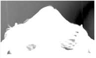
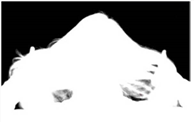

adjust lighting is enabled.
on both sides.
In the operations dropdown menu, you can select from the following options:
This operational mode gets the sampled backing screen color, analyzes the original foreground image, and determines the foreground areas using the Primatte foreground detection routine. Then, using the newly determined foreground areas, performs a Clean FG Noise operation internally and determines a more desirable shape for the middle and outer polyhedrons, before finally rendering the composite using the generated polyhedrons.
For keying operations, this is the first step and should be followed by the steps described immediately below.
When you select this operational mode, you sample pixels in the Viewer known to be 100% background. White noisy areas in the 100% background region become black. This is usually the second step in using Primatte.
When you select this operational mode, you sample pixels on the image window known to be 100% foreground. The color of the sampled pixels is registered by Primatte to be the same color as in the original foreground image. This makes dark gray areas in the 100% foreground region white. This is usually the third step in using Primatte.
When this operational mode is selected, the color sampled in the Viewer becomes 100% foreground. However, if the sampled color is already keyed out and removed, it leaves the current suppressed color. It only affects the key or matte information. This tool is usually used to quickly remove stray transparent pixels that have appeared during the chromakeying procedure. It is a quick and easy way to make final adjustments to a composite.
When this mode is selected, the opaque foreground color region sampled in the Viewer becomes slightly translucent. This operation is useful for the subtle tuning of foreground objects which are otherwise 100% covered with smoke or clouds. It can only be used one time on a particular color. For a more flexible way to thin out a color region and be able to make multiple samples, you should use the Matte (-) tool. It expands the medium polyhedron slightly.
With this mode selected, the completely transparent background region sampled in the Viewer becomes translucent. This operation is useful for restoring lost hair details, thin wisps of smoke and the like. It shrinks the small polyhedron slightly.
When you select this operational mode, the background color component in the sampled pixels (or spill) within the image window is keyed out and removed for the color region selected. This operation can only be used once on a particular color and the amount of spill suppression applied is not adjustable. It is the fastest way to remove spill from a composite image. For more accurate spill suppression, a Fine Tuning or Spill (+) operation should follow or be used instead. This can usually be the fourth (and final) step in using Primatte unless additional adjustments are necessary.
When this operational mode is selected, color spill is removed from the sampled pixel color (and all colors like it) in the amount of one Primatte increment. If spill color remains, another click using this tool removes more of the color spill. Continue using this tool until all color spill has been removed from the sampled color region. This tool expands the Primatte large polyhedron in the color region sampled.
When this operational mode is selected, color spill is returned to the sampled pixel color (and all colors like it) in the amount of one Primatte increment. This tool can be used to move the sampled color more in the direction of the color in the original foreground image. It can be used to nullify a Spill (-) step. This tool dents the Primatte large polyhedron in the color region sampled.
When this operational mode is selected, the matte is made more translucent for the sampled pixel color (and all colors like it) in the amount of one Primatte increment. If the matte is still too opaque, another click using this operational mode tool makes the sampled color region even more translucent. This can be used to thin out smoke or make a shadow thinner to match shadows in the background imagery. This tool expands the Primatte medium polyhedron in the color region sampled.
When this operational mode is selected, the matte is made more opaque for the sampled pixel color (and all colors like it) in the amount of one Primatte increment. If the matte is still too translucent or thin, another click using this operational mode tool makes the sampled color region even more opaque. This can be used to thicken smoke or make a shadow darker to match shadows in the background imagery. It can only make these adjustments to the density of the color region on the original foreground image. It can be used to nullify a Matte (-) step. This tool dents the Primatte medium polyhedron in the color region sampled.
When this operational mode is selected, foreground detail becomes more visible for the sampled pixel color (and all colors like it) in the amount of one Primatte increment. If detail is still missing, another click using this operational mode tool makes detail more visible. This can be used to restore lost smoke or wisps of hair. Sample where the smoke or hair just disappears and it returns to visibility. This is for restoring color regions that were moved into the 100% background region. It may start to bring in background noise if shooting conditions were not ideal on the foreground image. This tool dents the Primatte small polyhedron in the color region sampled.
When this operational mode is selected, foreground detail becomes less visible for the sampled pixel color (and all colors like it) in the amount of one Primatte increment. If there is still too much detail, another click using this operational mode tool makes more of it disappear. This can be used to remove smoke or wisps of hair from the composite. Sample where detail is visible and it disappears. This is for moving color regions into the 100% background region. It can be used to nullify a Detail (-) step. This tool expands the Primatte small polyhedron in the color region sampled.
If the spilled color has not been totally removed at this point, use the Fine Tuning Sliders for more subtle removal of spilled background color. For more information, refer to the section on Fine Tuning.
When this operational mode is selected and viewer is enabled in the Primatte properties, the sampled colors are displayed as a spray of white pixels in the Primatte Viewer. This allows you to see where the selected backing screen colors reside within the 3D RGB colorspace.
Although using the Smart Select BG Color operation is preferred, the Simple Select BG Color operation may still be useful in some cases. This operation uses the older method of taking the sampled backing screen color, projecting a line in the opposite direction on the hue wheel and generating artificial pixels that may represent the FG object. Then, using the artificially generated foreground pixels, it performs a Clean FG Noise operation internally and creates the shape of the middle and outer polyhedrons, before finally rendering the composite using the generated polyhedron.
This shows the current color selected (or registered) by the Fine Tuning operational mode.
This enables Primatte’s light adjusting feature, which, based on the currently selected BG color, generates a clean, evenly lit backing screen to use in the keying operation. This can improve the results if you have a very unevenly lit backing screen. For more information, see Adjust Lighting.
|
|
| An uneven backing screen. |
|  | |
|
The resulting matte when
|
The resulting key. Areas near the sampled color on the right look good, but on the left the hair is chunky. |
|  |
|
| The resulting matte when adjust lighting is enabled. |
The resulting key is clean on both sides. |
To tackle this problem, you can enable hybrid render to have Primatte create two keys internally and combine them for the best results. For more information, see Hybrid Matte.
|
|